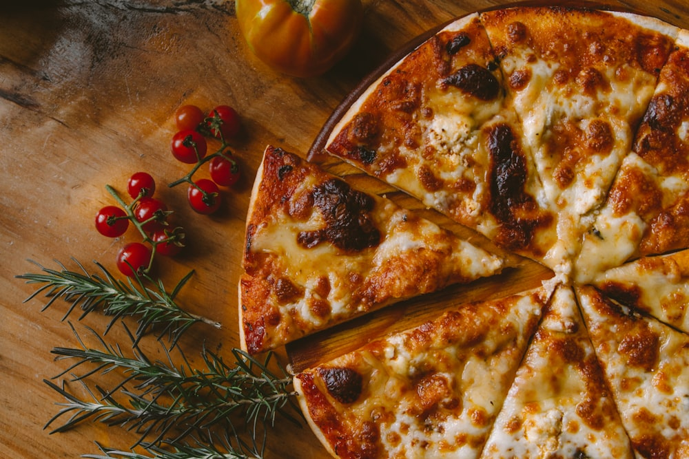

Oven Baked & Pressed
Artisan Lavash Flatbreads & Wraps
Ultra-crisp ancient grain lavash crusts and warm pressed whole wheat wraps made to order at 401 N Tryon.
Crisp, Light & Golden
Why Lavash Makes The Perfect Flatbread
Our Mediterranean lavash flatbreads offer a shatteringly crisp texture with fewer carbs and zero heavy dough. Topped with fresh local vegetables, hormone-free meats, and melted artisan cheeses, they bake in under four minutes.
- Caprese Flatbread: Fresh mozzarella, sweet grape tomatoes, basil ribbons, and aged balsamic glaze.
- Smoky BBQ Chicken: Herb chicken, smoked gouda, red onion, and tangy clean barbecue reduction.
- Salad-to-Wrap Option: Prefer a handheld lunch? Any signature salad can be rolled into a warm whole wheat wrap!

Featured Warm Wraps
Thai Peanut Crunch Wrap
Grilled chicken, shredded purple cabbage, edamame, carrots, crispy wontons, and Thai peanut sauce in a whole wheat wrap.
$11.75Southwest Chipotle Wrap
Seared chicken, black beans, roasted corn, pepper jack, avocado, tortilla strips, and chipotle lime drizzle.
$11.95Green Goddess Veggie Wrap
Organic kale, cucumber, Haas avocado, organic baked tofu, spiced chickpeas, and house creamy green goddess.
$11.25